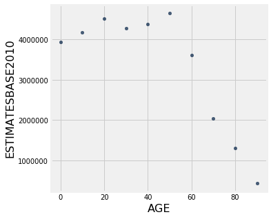

Introduction to Importing Data, Using Tables and Creating Graphs
The Jupyter Notebook
If you run into errors, check the common errors Google doc first.
First of all, note that this page is divided into what are called “cells”. For example, the following cell is a “code cell” where you will write your code. You’ll see a In [ ]: next to each cell for code, which is a counter for the cells you have run. You can navigate cells by clicking on them or by using the up and down arrows. Cells will be highlighted as you navigate them.
# this is a code cell
Executing cells
Ctrl-Enter (which will run the cell and keep the same cell selected), or Shift-Enter (which will run the cell and then select the next cell).
Try running the following cell and see what it prints out:
print("Hello world!")
Hello world!
10 + 10
20
(10 + 10) / 5
4.0
Now run this cell to import some code we’ll use today, nothing will print out, don’t worry!
import numpy as np
import matplotlib.pyplot as plt
from datascience import *
%matplotlib inline
plt.style.use("fivethirtyeight")
Importing
In data analytics, there is almost always a file holding your data that already exists. There are thousands of databases online that contain information on topics from all domains. In general, to import data from a file, we write:
Table.read_table("file_name")
Most often, these file names end in .csv to show the data format. .csv format is popular for spreadsheets and can be imported/exported from programs such as Microsoft Excel, OpenOffice Calc, or Google spreadsheets.
An example is shown below using U.S. Census data.
!pwd
/Users/chrispyles/GitHub/modules-textbook/content/psych
Table.read_table("data/nc-est2015-agesex-res.csv")
| SEX | AGE | CENSUS2010POP | ESTIMATESBASE2010 | POPESTIMATE2010 | POPESTIMATE2011 | POPESTIMATE2012 | POPESTIMATE2013 | POPESTIMATE2014 | POPESTIMATE2015 |
|---|---|---|---|---|---|---|---|---|---|
| 0 | 0 | 3944153 | 3944160 | 3951330 | 3963087 | 3926540 | 3931141 | 3949775 | 3978038 |
| 0 | 1 | 3978070 | 3978090 | 3957888 | 3966551 | 3977939 | 3942872 | 3949776 | 3968564 |
| 0 | 2 | 4096929 | 4096939 | 4090862 | 3971565 | 3980095 | 3992720 | 3959664 | 3966583 |
| 0 | 3 | 4119040 | 4119051 | 4111920 | 4102470 | 3983157 | 3992734 | 4007079 | 3974061 |
| 0 | 4 | 4063170 | 4063186 | 4077551 | 4122294 | 4112849 | 3994449 | 4005716 | 4020035 |
| 0 | 5 | 4056858 | 4056872 | 4064653 | 4087709 | 4132242 | 4123626 | 4006900 | 4018158 |
| 0 | 6 | 4066381 | 4066412 | 4073013 | 4074993 | 4097605 | 4142916 | 4135930 | 4019207 |
| 0 | 7 | 4030579 | 4030594 | 4043046 | 4083225 | 4084913 | 4108349 | 4155326 | 4148360 |
| 0 | 8 | 4046486 | 4046497 | 4025604 | 4053203 | 4093177 | 4095711 | 4120903 | 4167887 |
| 0 | 9 | 4148353 | 4148369 | 4125415 | 4035710 | 4063152 | 4104072 | 4108349 | 4133564 |
... (296 rows omitted)
That’s a lot of information. As you can see from the labels on top, this table shows Biological Sex (0=total, 1=male, 2=female), Age, 2010 Census Information, and predictions for U.S. population for the next five years.
Using Tables
We can make criteria to cut down tables. Accessing only the rows, columns, or values specfic to our purpose makes information easier understood. Analysis and conclusions can be made when data is more digestible.
We need to access the census table above and name it for further use. We assign the table to a variable so that we can reference it later!
census_data = Table.read_table("data/nc-est2015-agesex-res.csv")
census_data
| SEX | AGE | CENSUS2010POP | ESTIMATESBASE2010 | POPESTIMATE2010 | POPESTIMATE2011 | POPESTIMATE2012 | POPESTIMATE2013 | POPESTIMATE2014 | POPESTIMATE2015 |
|---|---|---|---|---|---|---|---|---|---|
| 0 | 0 | 3944153 | 3944160 | 3951330 | 3963087 | 3926540 | 3931141 | 3949775 | 3978038 |
| 0 | 1 | 3978070 | 3978090 | 3957888 | 3966551 | 3977939 | 3942872 | 3949776 | 3968564 |
| 0 | 2 | 4096929 | 4096939 | 4090862 | 3971565 | 3980095 | 3992720 | 3959664 | 3966583 |
| 0 | 3 | 4119040 | 4119051 | 4111920 | 4102470 | 3983157 | 3992734 | 4007079 | 3974061 |
| 0 | 4 | 4063170 | 4063186 | 4077551 | 4122294 | 4112849 | 3994449 | 4005716 | 4020035 |
| 0 | 5 | 4056858 | 4056872 | 4064653 | 4087709 | 4132242 | 4123626 | 4006900 | 4018158 |
| 0 | 6 | 4066381 | 4066412 | 4073013 | 4074993 | 4097605 | 4142916 | 4135930 | 4019207 |
| 0 | 7 | 4030579 | 4030594 | 4043046 | 4083225 | 4084913 | 4108349 | 4155326 | 4148360 |
| 0 | 8 | 4046486 | 4046497 | 4025604 | 4053203 | 4093177 | 4095711 | 4120903 | 4167887 |
| 0 | 9 | 4148353 | 4148369 | 4125415 | 4035710 | 4063152 | 4104072 | 4108349 | 4133564 |
... (296 rows omitted)
This notebook can calculate how large this table is with two functions: num_rows and num_columns. The general form for these functions are table.num_rows and table.num_columns.
Let’s use these on the table above.
census_data.num_rows
306
census_data.num_columns
10
That’s a 306 x 10 table! We can first start to cut down this table using only some columns. Let’s only include biological sex, age and the estimated base for 2010 census data.
There are two methods to make a table with select columns included. We could either use the ‘select’ function or the ‘drop’ function.
selectcan create a new table with only the columns indicated in the parametersdropcan create a new table with columns NOT indicated in the parameters
Here’s an example of two equal codes: (keep in mind that we assign each new table to a new variable, to make organization easier).
select_census_data = census_data.select("SEX", "AGE", "ESTIMATESBASE2010")
select_census_data
| SEX | AGE | ESTIMATESBASE2010 |
|---|---|---|
| 0 | 0 | 3944160 |
| 0 | 1 | 3978090 |
| 0 | 2 | 4096939 |
| 0 | 3 | 4119051 |
| 0 | 4 | 4063186 |
| 0 | 5 | 4056872 |
| 0 | 6 | 4066412 |
| 0 | 7 | 4030594 |
| 0 | 8 | 4046497 |
| 0 | 9 | 4148369 |
... (296 rows omitted)
drop_census_data = census_data.drop("CENSUS2010POP","POPESTIMATE2010","POPESTIMATE2011","POPESTIMATE2012","POPESTIMATE2013","POPESTIMATE2014","POPESTIMATE2015")
drop_census_data
| SEX | AGE | ESTIMATESBASE2010 |
|---|---|---|
| 0 | 0 | 3944160 |
| 0 | 1 | 3978090 |
| 0 | 2 | 4096939 |
| 0 | 3 | 4119051 |
| 0 | 4 | 4063186 |
| 0 | 5 | 4056872 |
| 0 | 6 | 4066412 |
| 0 | 7 | 4030594 |
| 0 | 8 | 4046497 |
| 0 | 9 | 4148369 |
... (296 rows omitted)
As you can see underneath the table, there are still 296 rows omitted! Our next step is to only include non-gendered data AKA data where SEX=0, neither male or female specific.
To do this, we need to use a new function where. The general form of this function is:
table_name.where(column_name, predicate)
To cut our table down to only include sex=0, we may use the predicate are.equal_to(). Note that we are assigning the new table to a new variable. We are referencing the table stored in an older variable (select_census_data), and modifying it. That modification is what is stored in the new variable.
new_census_data = select_census_data.where("SEX", are.equal_to(0))
new_census_data
| SEX | AGE | ESTIMATESBASE2010 |
|---|---|---|
| 0 | 0 | 3944160 |
| 0 | 1 | 3978090 |
| 0 | 2 | 4096939 |
| 0 | 3 | 4119051 |
| 0 | 4 | 4063186 |
| 0 | 5 | 4056872 |
| 0 | 6 | 4066412 |
| 0 | 7 | 4030594 |
| 0 | 8 | 4046497 |
| 0 | 9 | 4148369 |
... (92 rows omitted)
There are still 92 rows omitted! Let’s take every 10th entry to cut this table down a little more.
To do this we need to use the take function. The take function creates a new table with rows from the original table whose indices(row number) are given. In Python, indices start at 0!
Here’s taking every 10th entry. Inside of the take parentheses is a Python list of numbers from 0 to 90, increasing by 10s. This indicates exactly which rows we want to keep (every 10th row).
census_10_year = new_census_data.take([0,10,20,30,40,50,60,70,80,90])
census_10_year
| SEX | AGE | ESTIMATESBASE2010 |
|---|---|---|
| 0 | 0 | 3944160 |
| 0 | 10 | 4172559 |
| 0 | 20 | 4519556 |
| 0 | 30 | 4285877 |
| 0 | 40 | 4383450 |
| 0 | 50 | 4660457 |
| 0 | 60 | 3621214 |
| 0 | 70 | 2043178 |
| 0 | 80 | 1308608 |
| 0 | 90 | 435695 |
Now that sex is all the same, we can drop that column.
final_census_table = census_10_year.drop("SEX")
final_census_table
| AGE | ESTIMATESBASE2010 |
|---|---|
| 0 | 3944160 |
| 10 | 4172559 |
| 20 | 4519556 |
| 30 | 4285877 |
| 40 | 4383450 |
| 50 | 4660457 |
| 60 | 3621214 |
| 70 | 2043178 |
| 80 | 1308608 |
| 90 | 435695 |
Tables Essentials!
For your reference, here’s a table of useful Table functions:
| Name | Example | Purpose |
|---|---|---|
Table |
Table() |
Create an empty table, usually to extend with data |
Table.read_table |
Table.read_table("my_data.csv") |
Create a table from a data file |
with_columns |
tbl = Table().with_columns("N", np.arange(5), "2*N", np.arange(0, 10, 2)) |
Create a copy of a table with more columns |
column |
tbl.column("N") |
Create an array containing the elements of a column |
sort |
tbl.sort("N") |
Create a copy of a table sorted by the values in a column |
where |
tbl.where("N", are.above(2)) |
Create a copy of a table with only the rows that match some predicate |
num_rows |
tbl.num_rows |
Compute the number of rows in a table |
num_columns |
tbl.num_columns |
Compute the number of columns in a table |
select |
tbl.select("N") |
Create a copy of a table with only some of the columns |
drop |
tbl.drop("2*N") |
Create a copy of a table without some of the columns |
take |
tbl.take(np.arange(0, 6, 2)) |
Create a copy of the table with only the rows whose indices are in the given array |
join |
tbl1.join("shared_column_name", tbl2) |
Join together two tables with a common column name |
are.equal_to() |
tbl.where("SEX", are.equal_to(0)) |
find values equal to that indicated |
are.not_equal_to() |
tbl.where("SEX", are.not_equal_to(0)) |
find values not including the one indicated |
are.above() |
tbl.where("AGE", are.above(30)) |
find values greater to that indicated |
are.below() |
tbl.where("AGE", are.below(40)) |
find values less than that indicated |
are.between() |
tbl.where("SEX", are.between(18, 60)) |
find values between the two indicated |
Visualizations
Now that we have a manageable table we can start making visualizations! Due to the numerical nature of the census table above, let’s first try a scatter plot.
To create a scatter plot, we need to use the scatter() function. The general form is:
table.scatter("column for x axis", "column for y axis")
An example is shown below:
final_census_table.scatter("AGE", "ESTIMATESBASE2010")

With this data, we can also make a line plot. To do this, we need to use the plot() function. This works a lot like scatter() where the general form is:
table.plot("x column", "y column")
final_census_table.plot("AGE", "ESTIMATESBASE2010")

Though a bar may be better. Bar graphs follow the same formula as scatter plots and line graphs above, with the general form:
table.bar("x axis", "y axis")
final_census_table.bar("AGE", "ESTIMATESBASE2010")

You can also use the functino barh() instead of bar() in order to flip the bar graph horizontally. Sometimes, this makes for a cleaner visualization.
Merging Tables
We are going to cover one more topic briefly that you will need to use in your project. We are going to look into how to merge two tables that have common information. This technique will be very valuable when the time comes for you to do your own analysis with your own data sets.
We are going to read in a table with information about psychologists. We will call this new table psych1.
psych1 = Table.read_table("example-data/psych1.csv")
psych1
| Psychologist | Birth Year |
|---|---|
| Freud | 1856 |
| Skinner | 1904 |
| Piaget | 1896 |
| Maslow | 1908 |
Adding rows
You may have another table that has the exact same columns and you just want to add the rows to what you already have. Let’s read in another short table with a couple more psychologists:
psych2 = Table.read_table("example-data/psych2.csv")
psych2
| Psychologist | Birth Year |
|---|---|
| Jung | 1875 |
| Erikson | 190 |
Great! We see that this second table has the same columns as the first one. Merging these two tables would allow us to consolidate our information. We are going to use the “append” method to append the second table onto the first!
psych_merged = Table.copy(psych1) # copying over the new_psych table to a new variable for the merged table
psych_merged.append(psych2)
psych_merged
| Psychologist | Birth Year |
|---|---|
| Freud | 1856 |
| Skinner | 1904 |
| Piaget | 1896 |
| Maslow | 1908 |
| Jung | 1875 |
| Erikson | 190 |
As you can see, we have succesfully merged these two tables together! Now, let us try merging an additional column onto the original new_psych table.
Adding columns
Let’s pretend that we suddenly have access to the favorite foods of each psychologist. Wow! We definitely want to include that information in our table. This means that we need to merge in a new column to the initial table. Let us print the table first, and then we’ll get the other column.
psych_merged
| Psychologist | Birth Year |
|---|---|
| Freud | 1856 |
| Skinner | 1904 |
| Piaget | 1896 |
| Maslow | 1908 |
| Jung | 1875 |
| Erikson | 190 |
Now we are going to create to read in our new information.
psych_foods = Table.read_table('example-data/favorite_food.csv')
psych_foods
| Favorite Food |
|---|
| Pizza |
| Snickers |
| Grapes |
| Escargot |
| Ice Cream |
| Apples |
Luckily, we are going to assume that each row is in the right order in the column. We are going to use a similar process as before to merge this column! The method we now use is append_column. Otherwise, the format stays the same!
psych_merged_with_food = Table.copy(psych_merged) # copying over the new_psych table to a new variable
psych_merged_with_food.append_column("Favorite Food", psych_foods['Favorite Food'])
psych_merged_with_food
| Psychologist | Birth Year | Favorite Food |
|---|---|---|
| Freud | 1856 | Pizza |
| Skinner | 1904 | Snickers |
| Piaget | 1896 | Grapes |
| Maslow | 1908 | Escargot |
| Jung | 1875 | Ice Cream |
| Erikson | 190 | Apples |
As you can see, we’ve successfully merged a column to our table too!
Joining on columns
Suppose now that you have more information on the these psycologists (another column), but the rows aren’t in the right order so you can’t just append_column. Luckily, you have their names.
psych_birthplaces = Table.read_table("example-data/birthplaces.csv")
psych_birthplaces
| Psychologist | Birth Place |
|---|---|
| Maslow | New York |
| Erikson | Germany |
| Skinner | Pennsylvania |
| Piaget | Switzerland |
| Freud | Czech Republic |
| Jung | Switzerland |
Awesome! We love more data, but how can I merge this back into our existing information? We can’t just add a column because the order is different.
Solution: We can use the join method and tell it which column the two tables have in common, and it will match the data to the correct row:
final_table = psych_merged_with_food.join("Psychologist", psych_birthplaces)
final_table
| Psychologist | Birth Year | Favorite Food | Birth Place |
|---|---|---|---|
| Erikson | 190 | Apples | Germany |
| Freud | 1856 | Pizza | Czech Republic |
| Jung | 1875 | Ice Cream | Switzerland |
| Maslow | 1908 | Escargot | New York |
| Piaget | 1896 | Grapes | Switzerland |
| Skinner | 1904 | Snickers | Pennsylvania |
That’s super cool!
SUMMARY
You’ve learned a lot in this module! Let’s look back on the key parts.
-
To import data from a .csv/.txt file, we write
Table.read_table("file_name"). -
To create our own table, we write
Table( ).with_columns("Column Name", array_name, . . .). -
To count number of rows, we use
table_name.num_rows. -
To count number of columns, we use
table_name.num_columns. -
To create a new table with only the columns indicated in the parameters, we use
table_name.select("COLUMN NAME", ...). -
To create a new table without the columns indicated in the parameters, we use
table_name.drop("COLUMN NAME", ...). -
To create a table with only certain values, we can use
table_name.where(column_name, predicate). -
To create a new table with indicated rows from the original table, we use
table_name.take([index 1, index 2, . . . ]). Remember in Python indices start at 0! -
To create a scatter plot, we use
table.scatter(column for x axis, column for y axis). -
To create a line plot, we use
table.plot(x column, y column). -
To make a bar graphs, we can use either
table.bar(x column, y column)ortable.barh(x column, y column). -
To make a histogram, we use
table.hist(x axis, bins(optional), unit(optional)). -
To merge tables, we use either
appendorappend_column. -
To merge two tables with a common column name we use the
joinmethod.
With just some simple code, we were able to do an incredible amount of data analysis! Play around with the examples until you feel comfortable with the content of this notebook. We will be using notebooks to analyze your own data sets in the future! Please ask if you have questions!
If you need help, please consult the Data Peers!